Welcome to Plastic Transition.
Together we can put our plastic on a safe journey out of the biosphere and build our greenest visions.
When we save, segregate and pack plastics into bottles, we can make building blocks that can be reused over and over again. Together we can build green spaces that enrich our community and safely secure plastic out of the biosphere. Together we can transition from plastic to ever greener harmony with Earth’s cycles.